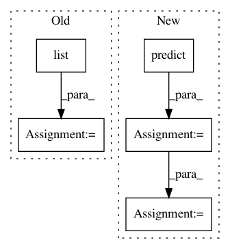

2028dffb2a29570c72f10bcb3e35e33fa7fb1c03,finetune/base.py,BaseModel,_inference,#BaseModel#Any#Any#,214
Before Change
input_func = self.input_pipeline.get_predict_input_fn(Xs)
length = len(Xs) if not callable(Xs) else None
pred_gen = list(
map(
lambda y: y[mode] if mode else y,
tqdm.tqdm(
estimator.predict(
input_fn=input_func, predict_keys=mode
),
total=length,
desc="Inference"
)
)
)
return pred_gen
def fit(self, *args, **kwargs):
An alias for finetune.
After Change
self._input_fn = lambda: self.input_pipeline._dataset_without_targets(
self._data_generator, train=None
).batch(self.config.batch_size)
self._predictions = self.estimator.predict(input_fn=self._input_fn)
predictions = [None] * n
for i in range(n):
y = next(self._predictions)
y = y[mode] if mode else y
predictions[i] = y
return predictions
In pattern: SUPERPATTERN
Frequency: 3
Non-data size: 5
Instances
Project Name: IndicoDataSolutions/finetune
Commit Name: 2028dffb2a29570c72f10bcb3e35e33fa7fb1c03
Time: 2018-11-13
Author: madison@indico.io
File Name: finetune/base.py
Class Name: BaseModel
Method Name: _inference
Project Name: IndicoDataSolutions/finetune
Commit Name: 3ce15cf0b1b83503d0a35a0077cb93322c2cc710
Time: 2018-11-13
Author: madison@indico.io
File Name: finetune/base.py
Class Name: BaseModel
Method Name: _inference
Project Name: AIRLab-POLIMI/mushroom
Commit Name: 706a4e840607d50dc94249150366a23ba720a900
Time: 2017-09-06
Author: carlo.deramo@gmail.com
File Name: mushroom/approximators/ensemble.py
Class Name: Ensemble
Method Name: predict